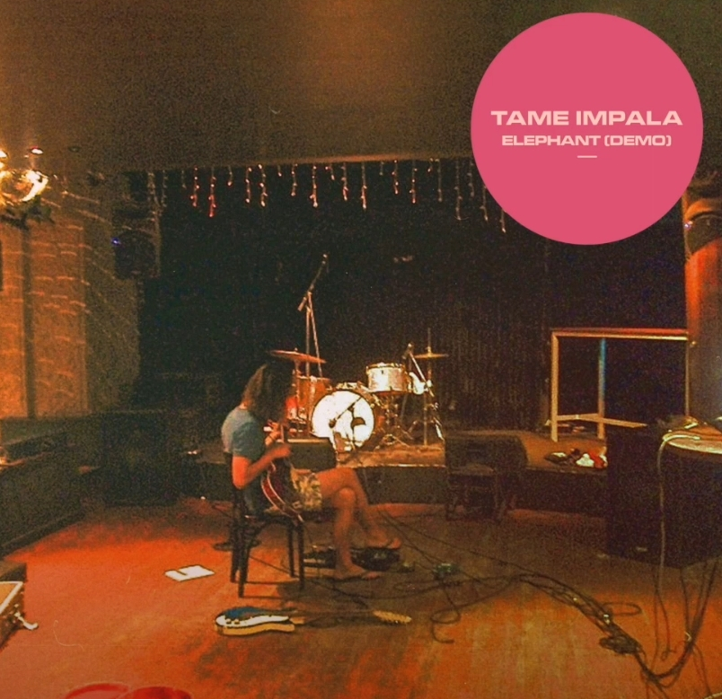
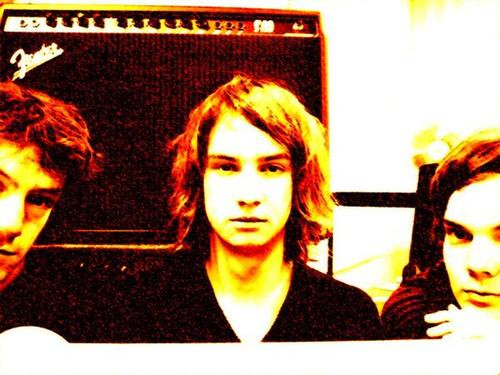
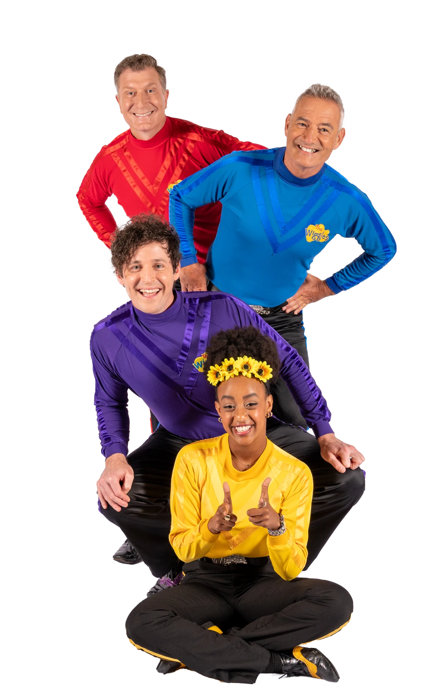
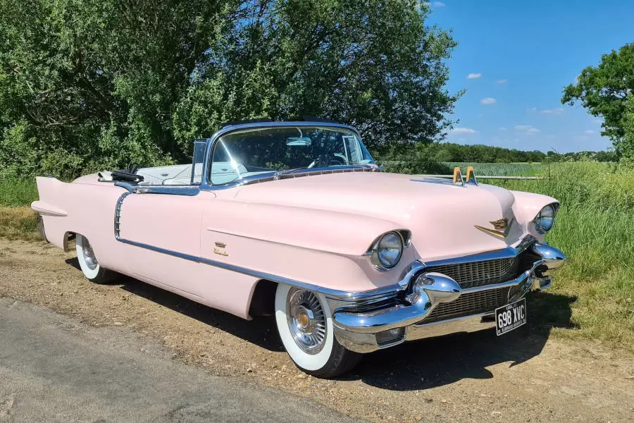

9. Elephant
Az második single az albumról, és az szám, amely Kevin Parker házának a felét kifizette.
Egyik legrégebbi száma, egy teljes zenei anomália ezen az albumon, de témában valahogy mégis illik ide. Kevin azt mondta, hogy a Perth-i rockszintér arrogáns zenekarai inspirálták. A szám egy régebbi demóját az album 10 éves évfordulóján kiadta.
Maga a dal zeneileg inkább blues-osabb, jobban hajaz a The Dee Dee Dums-ra vagy a Tame Impala EP -ben hallot zenékre.
-ben hallot zenékre.
A szám jelentése nem túl nehezen megfejthető, és hasonlít arra a dühre amit már a „Why Won’t They Talk To Me”-ben láttunk. A narrátor kifigurázza, felfedi az „elefánt”, az egocentrikus, arrogáns népszerű srác sebezhetőségeit. Kevin azt nyilatkozta, hogy egy magányos ember szemszögéből ezek az nagyképű emberek számára mindig elefántoknak tűntek.
Mivel egy single, videóklip is járt mellé. Mint a zenéje, a dal klipje sem teljesen illik ebbe az albumba. Egy pszichedelikusan megvágott videó, melyben a zenekar tagjai is az ausztrál táj között váltakozik.

Részlet a videóklipből
A szám elején, az első versszakban arról beszél, hogy ezt az az embert „elefántnak” látja, aki csak azért is lóbálja ormányát, mert megteheti. Tehát a sok „menősködő”, arrogáns dolgot csak azért csinálja, mert tudja, hogy következmények nélkül teheti. A dal énje úgy folytatja, hogy az „elefánt” tudja, hogy mindenki arról álmodozik, hogy jóban lehessen vele, de az esélyeik csekélyek, ő nem viszonozza a barátságokat. A narrátor ezzel kiemeli, hogy ő a figyelemhajhász, öntelt embereket megveti. Ezután azt mondja, hogy „Mr. Shuck” kicsit sem szerény, mindenkinek megmondja, hogy ő felettük áll, jobb náluk.
Ezt az követi, hogy a narrátor elkezdi feltárni az „elefánt” sebezhetőségeit. Azt gondolja, hogy azért ilyen, mert valamilyen trauma érte és így tud vele megbirkózni, ezért ilyen kőszívű. Folyatja, azt mondja, hogy a barátai csak félelemből követik, nem hűségből. Sőt, ezeket a „barátokat” az sem érdekelné, ha egy nap csak eltűnne az „elefánt”. Majd a versszakot azzal zárja, hogy „Oh nézd, ott jön le a lépcsőn. Ez egy szarkasztikus megfigyelés, igazából senkit sem érdekelnek a grandiózus belepői. Ezek már kiszámíthatóvá váltak, de mindenki ugyanúgy meglepettnek tetteti magát, annak reményében, hogy megkedveli őket.
Egy halk suttogás után, kissé mintha a dal személyének barátja oda súgna neki, hogy „Itt jön!”, egy zenei szünet következik. Ebben a szünetben igazán érezhető válik, hogy ez a szám nem erre az albumra készült. Tipikus garage rock szám, de ennek ellenére fülbemászó, nagyon is élvezhető. Nem véletlenül használták már fel rengeteg autóreklámban. Sőt, még egy ausztrál gyerekzene zenekar, a The Wiggles is feldolgozta, majd Parkerrel előadták.
A második versszak egy metaforával kezdődik. Az „elefánt” letépte a Cadillac-jéről a visszapillantót, mert nem szeret „visszanézni”. Szeret tehát úgy tenni, hogy csak is a jelenben él, de ez a biztonságába kerül. Illetve nem szeret reflektálni, nem szeret magába nézni, mert akkor realizálná hibáit- miközben persze tökéletesnek gondolja magát. A Cadillac, mint luxusmárka, a hiúságot jelképezi. Aztán a narrátor azt mondja, hogy ez az öntelt srác úgy beszél, mint akinek a véleménye egyszerű tény, megerősítve azt, hogy csacsener, mindenre rábolintó emberekkel van körbevéve, akik minden szavával egyetértenek.
A versszak második felében fordulat történik- valaki megragadta a gallérját, átvitt értelemben valaki konfrontálja, megmondja a magáét, lehordja őt. Ettől az „elefánt” összeroppan, „végigsírta a hazavezető utat”.
Ennek a nyilvános megszégyenítésnek az ellenére, amikor legközelebb látták, akkor már „senki egy dologra sem emlékezett”. Úgy tett, mint ha meg sem történt volna, és az általa megfélemlített fejbólintó jánosok engedelmeskedtek, hogy megvédjék az egoját. A szám azzal végződik, hogy a szám énje csak annyit mond „a végzetekig így is fog maradni”. Ez alatt azt érti, hogy az ilyen emberek nem fognak megváltozni, sohasem fognak magukba nézni és észrevenni hibáikat.
A szám elég abruptul végződik, egy choked hi-hat, egy utolsó basszus hang és csönd.
Mindössze csak két szintetizátor található ezen a dalon, az egyik egy orgona, a másik pedig egy lead, mindkettő egyszerű delay effektel.
A gitár igazán jól átadja Kevin korai hangzását, csak egyszerű torzítás és egy Fuzz Face van rajta, de tökéletesen működik a számon.
A dobolás elég egy viszonylag egyszerű, erőteljes shuffle beat, hi-hat akcentusokkal. Ez szembe megy az album többi számán található, precíz, intrikált dobolással, de érthető, hisz a shuffle kéz a kézben jár a blues-al. Magukon a dobokon erős szaturáció és kompresszió van. A számon kivételesen nem Kevin, hanem bandatag Jay Watson játszott.
A basszus, a dobbal együtt, olyan hatást ad, mintha egy elefánt sétálna, taposna a fülünkben. Igaz, hogy csak egy vagy néhány hangot játszik, de ez az egyszerűség pozitívan komplimentálja a számot.